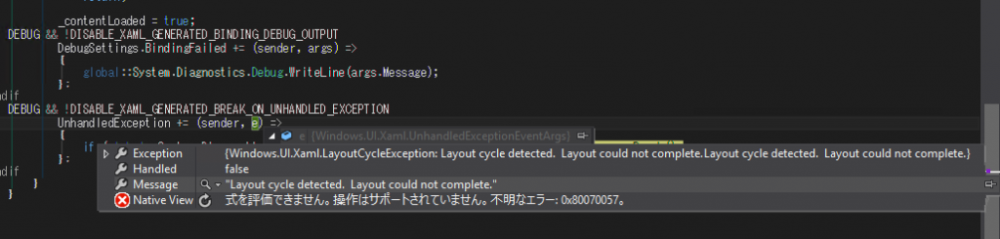

前回はデバイス固有の電話機能を使ってみました。
Problem
Xamarin.Formsの2.2から各OS固有のコントロール (Native Control)をSharedプロジェクトから生成して、ContentView.ContentやLayout.Childrenに埋め込むことができるようになりました。 このあたりの説明は、P3PPP様の下記の記事が参考になります。
で、ポイントは、Sharedプロジェクトで**#ifディレクティブ**で分岐するとかする必要があるとのこと。 でも、思うわけですよ。C++ならともかく、モダンなC#でそんなことしたくないわけですよ。 ディレクティブだらけのソースなんか保守性低下するのは目に見えていますから。 で、思いました。 PCLから、Native Controlを使えないか？って。
Resolution
仕組みは単純で、前回話したDependencyServiceを上手く使うだけです。 各プロジェクトでNative Controlを生成して、それをPCL側で使用するだけです。 ただし、当然Native Controlは、そのままでは、Xamarin.FormsのUIに追加できません。 Xamarin.Forms.Viewに変換する必要があります。 この変換は拡張メソッドのXamarin.Forms.Platform.iOS.LayoutExtensions.ToView、Xamarin.Forms.Platform.Android.LayoutExtensions.ToView、Xamarin.Forms.Platform.UWP.LayoutExtensions.ToViewを使用して、Native ControlをViewに変換します。 今回のソースは下記になります。

PCL
最初にPCLの説明をします。
Serviceのinterface
3つのデバイスのNative Controlを生成するためのinterfaceであるINativeControlServiceを定義します。 INativeControlService.cs [code lang=”csharp”] namespace Xamarin.Forms.Portable9.Services { public interface INativeControlService {
View Create();
}
} [/code] 各プロジェクトはPCLを参照しているので、このinterfaceを実装して各固有機能へのアクセスを提供します。
View
Viewです。 今回はソースから追加するので、 MainPage.xaml [code lang=”xaml”]
namespace Xamarin.Forms.Portable9 { public class App : Application { public App() { var service = DependencyService.Get(); var view = service.Create() as View; view.HorizontalOptions = LayoutOptions.Center; view.VerticalOptions = LayoutOptions.Center;
// The root page of your application MainPage = new MainPage { Content = view }; }
protected override void OnStart() { // Handle when your app starts }
protected override void OnSleep() { // Handle when your app sleeps }
protected override void OnResume() { // Handle when your app resumes } } } [/code]
iOS
PCLで定義したインターフェースを実装します。 NativeControlService.cs [code lang=”csharp”] using UIKit; using Xamarin.Forms.Platform.iOS; using Xamarin.Forms.Portable9.iOS.Services; using Xamarin.Forms.Portable9.Services;
[assembly: Xamarin.Forms.Dependency(typeof(NativeControlService))] namespace Xamarin.Forms.Portable9.iOS.Services { public sealed class NativeControlService : INativeControlService {
public View Create() { var label = new UILabel { MinimumFontSize = 14f, Lines = 0, LineBreakMode = UILineBreakMode.WordWrap, Text = “iOS”, };
return label.ToView(); }
}
} [/code]
Android
NativeControlService.cs [code lang=”csharp”] using Android.Widget; using Xamarin.Forms.Platform.Android; using Xamarin.Forms.Portable9.Droid.Services; using Xamarin.Forms.Portable9.Services;
[assembly: Xamarin.Forms.Dependency(typeof(NativeControlService))] namespace Xamarin.Forms.Portable9.Droid.Services { public sealed class NativeControlService : INativeControlService { public View Create() { var view = new TextView(Forms.Context) { Text = “Android”, TextSize = 14, };
return view.ToView(); }
}
} [/code]
UWP
NativeControlService.cs [code lang=”csharp”] using Windows.UI.Xaml.Controls; using Xamarin.Forms.Platform.UWP; using Xamarin.Forms.Portable9.Services; using Xamarin.Forms.Portable9.UWP.Services;
[assembly: Xamarin.Forms.Dependency(typeof(NativeControlService))] namespace Xamarin.Forms.Portable9.UWP.Services { public sealed class NativeControlService : INativeControlService {
public View Create() { var label = new TextBlock { Text = “UWP”, };
return label.ToView(); }
}
} [/code]
実行してみる
iOS
{kind=link}
UILabel
Android
{kind=link}
TextView
UWP
**Layout cycle detected. Layout could not complete.**という例外を投げたため実行できませんでした。何故だ…. 
{kind=link}
無慈悲な例外
Conclusion
Sharedプロジェクトでしか使えない、というのはディレクティブの関係なので、固有のUI生成を各プロジェクトに任せてしまえば、どうとでもなります。 XAMLで使えるように工夫次第でできるはずです。 ContentViewの派生クラスのコンストラクタでDependencyService経由で生成したNative Controlをラップすれば、それをXAMLから使うことができるでしょう。
Source Code
https://github.com/takuya-takeuchi/Demo/tree/master/Xamarin.Forms.Portable9